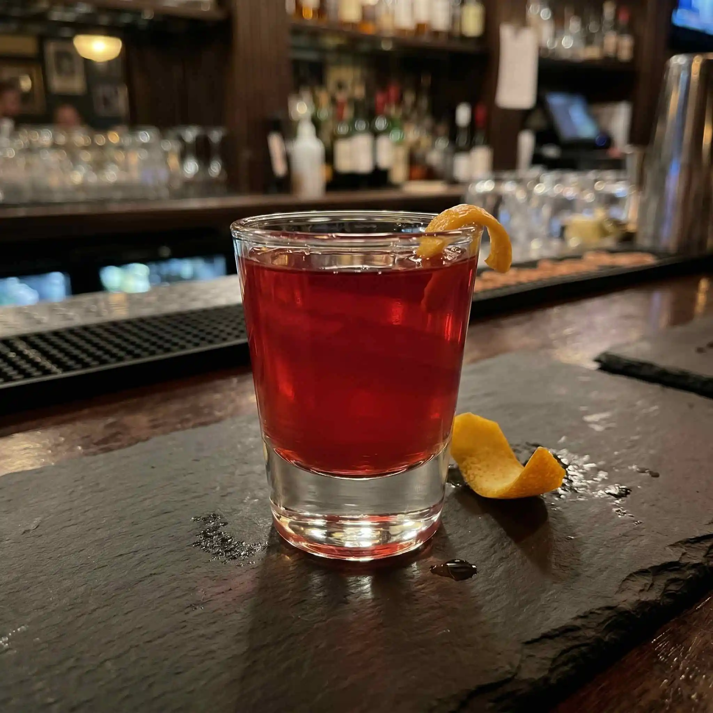
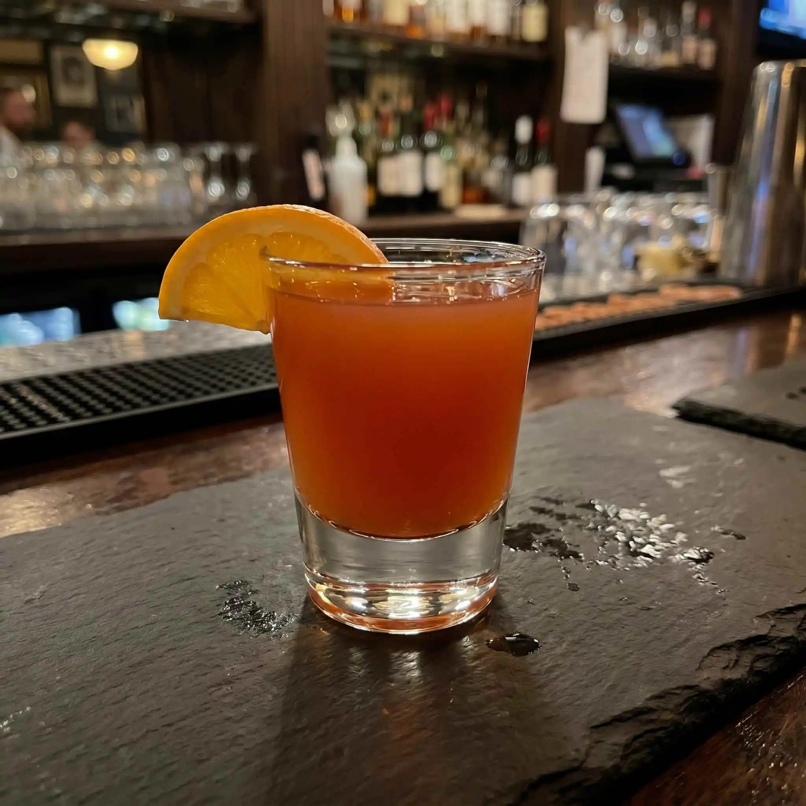
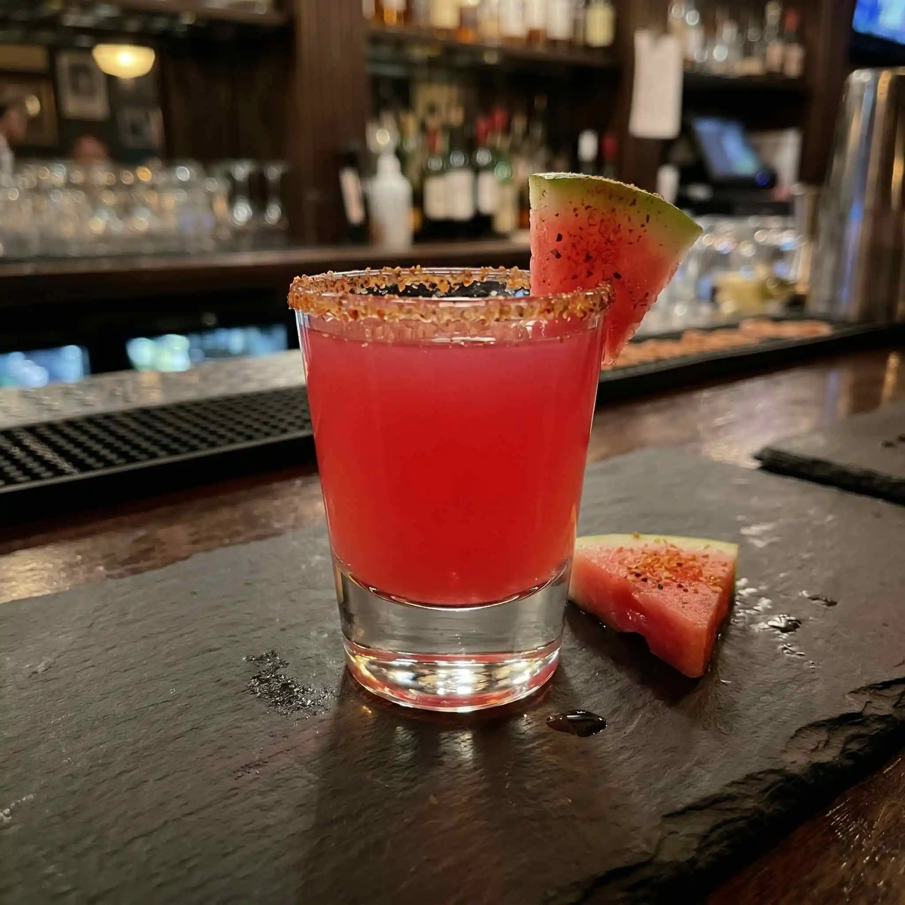
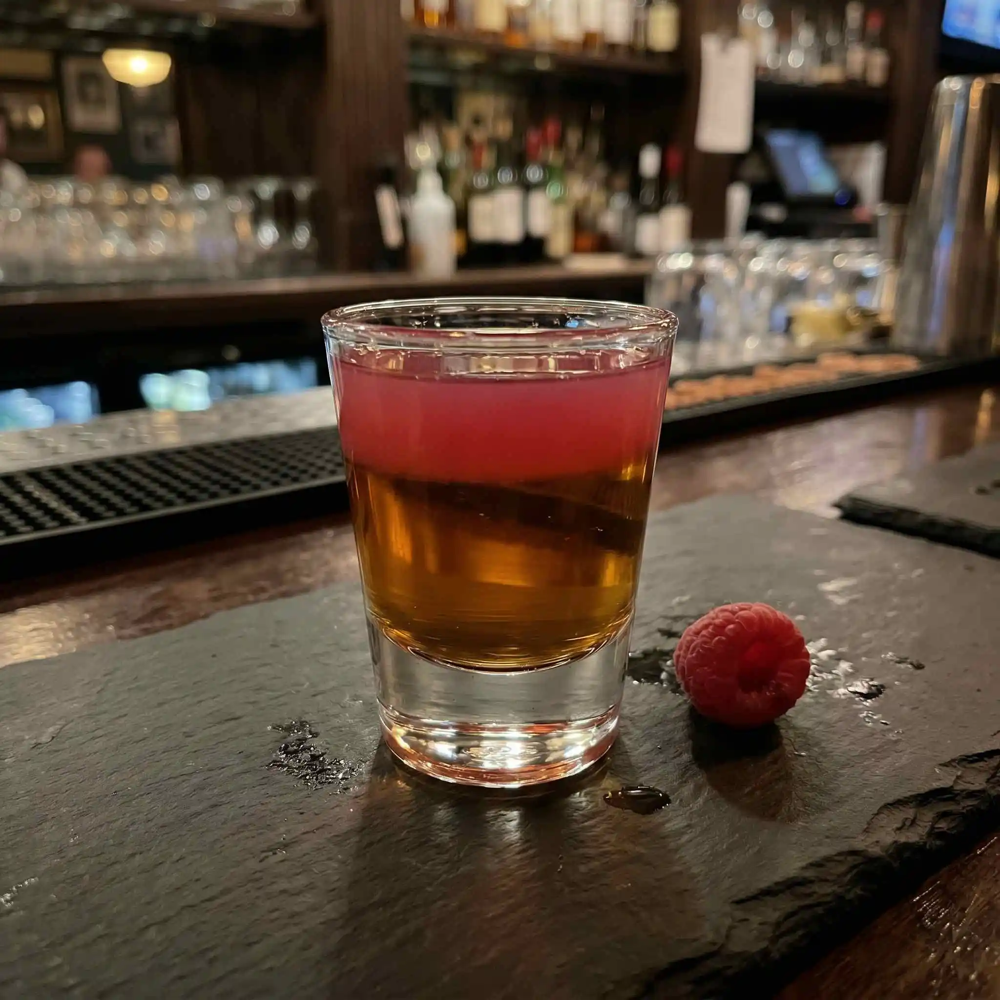
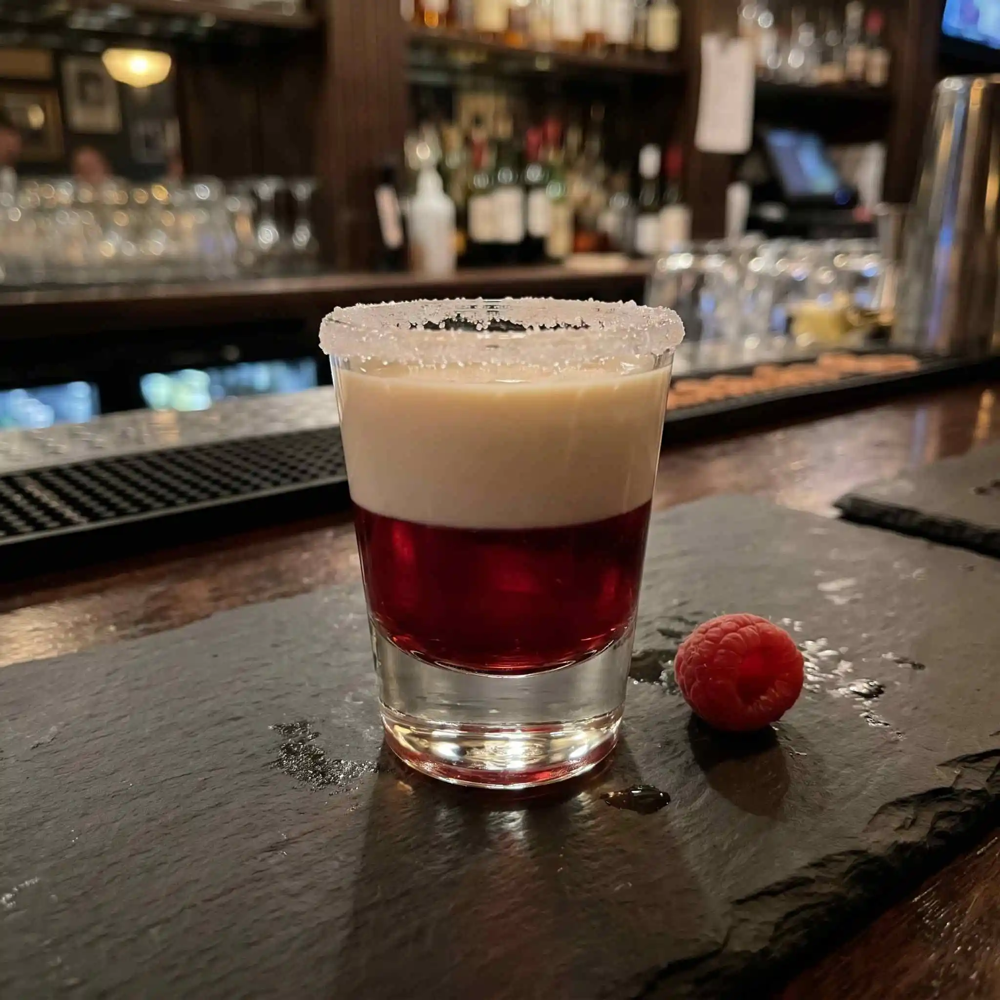

Red Snapper Shot
Canadian whisky, amaretto and cranberry. Smooth, nutty and a little tart.

Canadian whisky, amaretto and cranberry. Smooth, nutty and a little tart.

Mix 1.5 oz cranberry juice with 2 drops of almond extract.
Pour it, then start a room. Drinking is optional in every game.

Alabama Slammer ShotA fruity Southern classic with amaretto, peach and orange.
Mexican Candy ShotSweet watermelon with a chili kick, like the lollipop it is named after.
PB&J ShotPeanut butter whisky and raspberry liqueur. It really does taste like the sandwich.
Jam Doughnut ShotRaspberry liqueur under Irish cream with a sugar rim. It tastes like a jam doughnut.